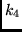

Next: SAI_SQLS2
Up: SAI_SQLS1
Previous: The subroutine WWLS1
The routine determines the value of matrix elements:
![\begin{displaymath}
( l^{N} QLS \vert\vert [ [ a^{(qls)}_{m_{q1}} \times a...
...]^{(k_{3}k_{4})} ]^{(k_{l}k_{s})} \vert\vert l^{N'} QLS ).
\end{displaymath}](img392.png) |
(40) |
The routine WWPLS1 uses the routines ITLS, RUMT, IZAS1 for calculation of this sort
of the matrix element. The subroutine W1 calculates the first and the second
parts of the operator calculates. The routine SIXJ finds 6j- symbol.
The subroutine uses the COMMON block /TRK/, which contains arrays I and B
for the bra and ket function (ID1, IK1,BD1 and BK1).
It uses the expression (40) from P2 [4].
The subroutine has the formal arguments:
- K1 is the rank
 .
.
- K2 is the rank
 .
.
- K3 is the rank
 .
.
- K4 is the rank .
- K5 is the rank
 .
.
- K6 is the rank
 .
.
- QM1, QM2, QM3 and QM4 are the quasispin projections in (40).
- WW is the value of the reduced matrix element (40) which is returned by the subroutine.
2001-12-07